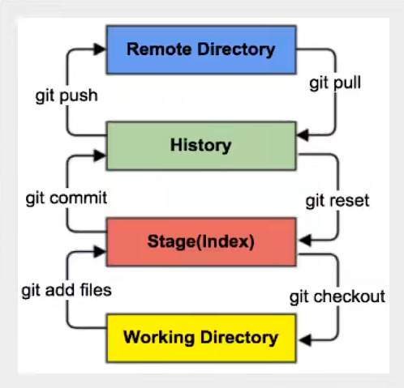
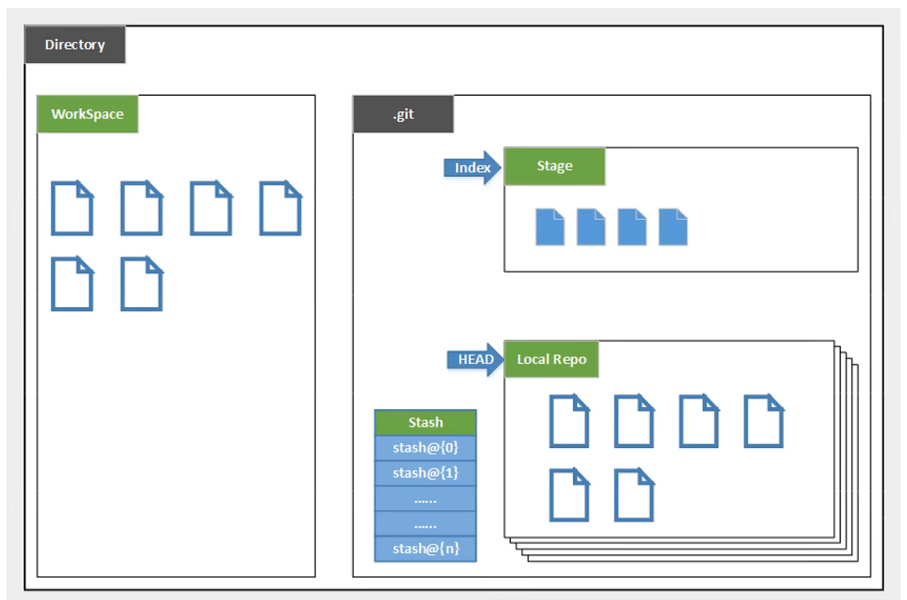
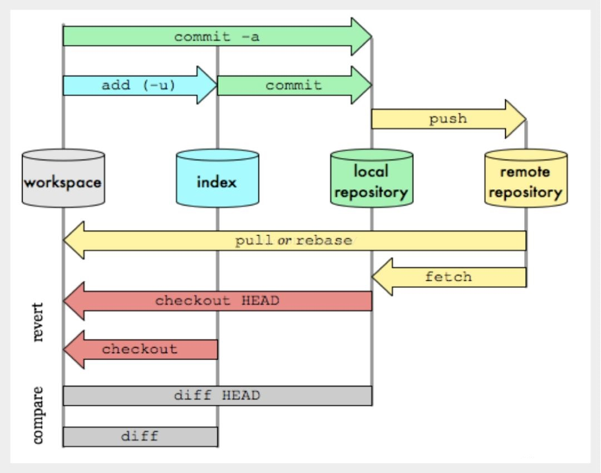

Git的工作原理
文章目录
工作区域
git本地有三个工作区域 工作目录(working Directory)、暂存区(Stage/Index)、资源库(Repository或Git Directory)。如果再加上远程的git仓库(Remote Directory)，就可以分为四个工作区域。
这四个工作区域的转化关系如下：

根据上图来分析各层的关系：
- Workspace: 工作区，平时存放代码的地方。
- Index/Stage： 暂存区，用于临时存放你的改动，事实上它只是一个文件，保存即提交到文件列表信息。
- Repository： 仓库区(或本地仓库)，就是安全存放数据的位置，这里有你提交到所有版本的数据，其中HEAD指向最新放入仓库的版本。
- Remote： 远程仓库，托管代码的服务器，可以简单地认为是你项目组中的一台电脑用于远程数据交换。
本地区域与文件示意图
本地的三个区域确切的说应该是git仓库中HEAD指向的版本

- **Directory：**使用Git管理的一个目录，也就是一个仓库，包括我们的工作空间和Git的管理空间
- **WorkSpace：**需要通过Git进行版本控制的目录和文件，这些目录和文件组成了工作空间
- **.git：**存放Git管理目录信息的目录初始化仓库的时候自动创建
- **Index/Stage：**暂存区（待提交更新区），在提交进入repo之前，我们可以把所有的更新放在暂存区
- **Local Repo：**本地仓库，一个存放在本地的版本库；Head指向当前的开发分支
- **Stash：**隐藏，是一个工作状态保存栈，用于保存/恢复WorkSpace中的临时状态
Git工作流程
git的工作流程主要分为以下几个步骤
- 在工作目录中添加、修改文件；
- 将需要进行版本管理的文件放入暂存区域：
git add - 将暂存区域的文件提交到本地git仓库：
git commit - 将本地git仓库中的内容
push到云端

文章作者 Pure3417
上次更新 2023-01-26